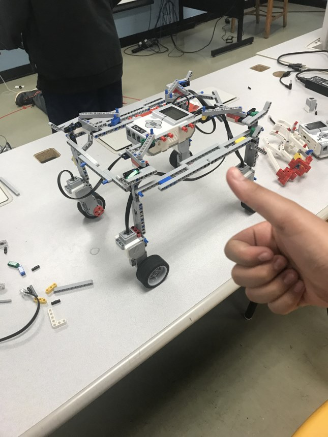

This year for choice day in the first term I picked to work in bike shop. We worked to assemble, disassemble, and fix parts on bikes. And me and my friend got assigned to work on this one bike to just repair a couple things this should've taken one class. It took us 5 or 6 because every single time we thought we'd be done new problems would be found.

This was a lego robot I built and programed for a robot battle. Most people's robots focused on making the most destructive ones possible but I created one that was the least destructive and the most defencive by making it taller than every other robot I thought that in theory no robot would be able to get to it. If you were wondering I was wrong.